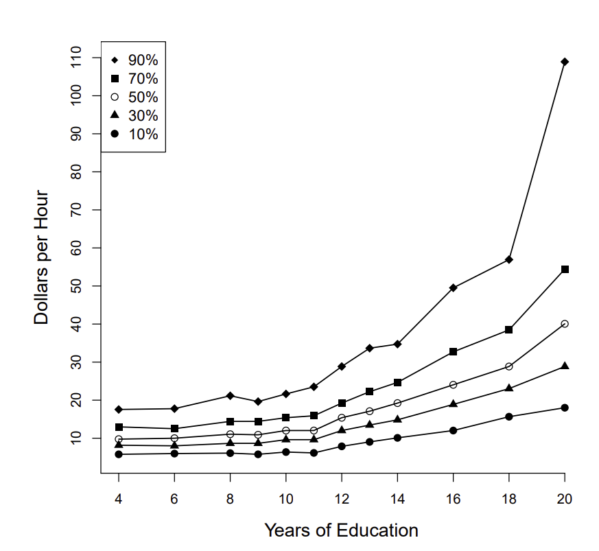
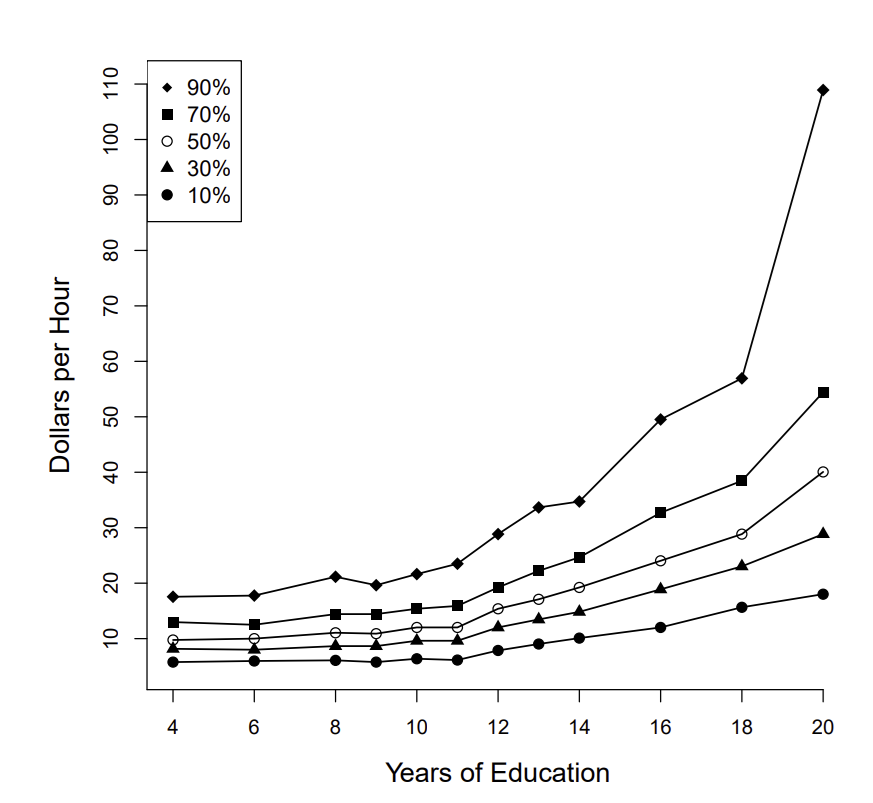
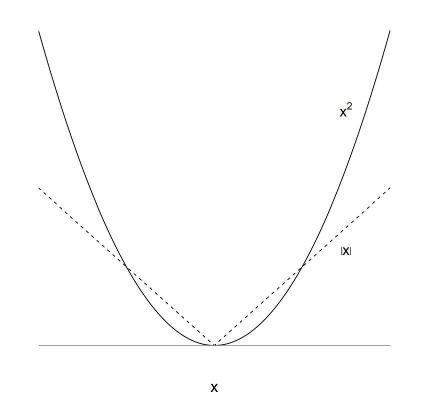
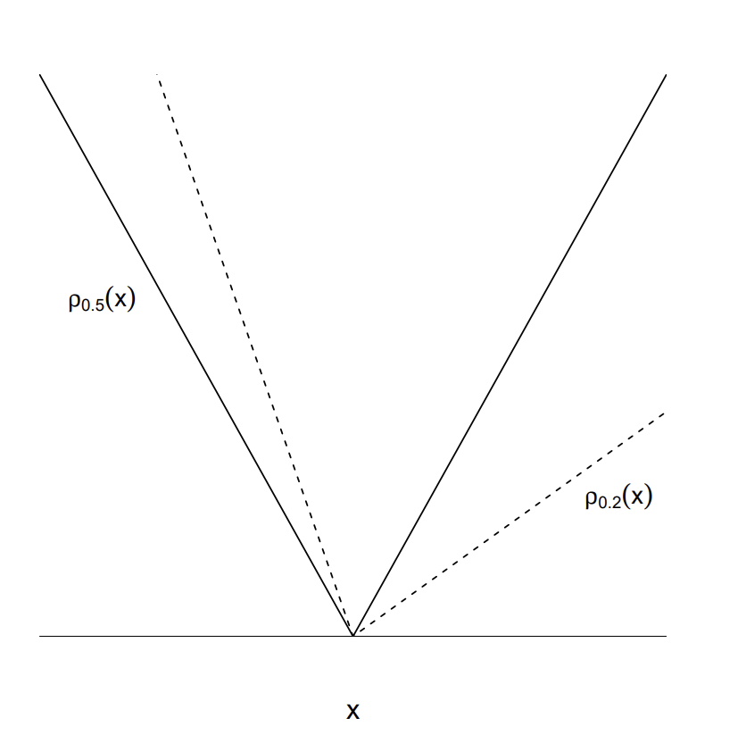
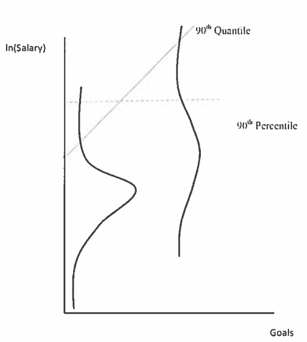

Cuando vemos estadística descriptiva, muchas veces necesitamos más que la media para tener una idea de cómo se ven los datos
Similarmente, la regresión por MCO nos sirve para descubrir relaciones promedio basadas en \(E(y|x)\)
En muchos problemas nos interesan aspectos distribucionales
¿Cómo es la distribución del ingreso para las personas con grado universitario comparada con la distribución del ingreso de las personas sin primaria completada?
\[q=P(y\leq \mu_q)=F_y(\mu_q)\]
donde \(F_y\) es la función de distribución acumulada de \(y\)
Por tanto, \(\mu_q=F_y^{-1}(q)\)
Algunos cuantiles comúnmente usados son
\(q=0.5\) es la mediana
\(q=0.25\) es el cuartil inferior
\(q=0.75\) es el cuartil superior
Por ejemplo, si \(y\) es el salario mensual y \(\mu_{0.75}=6,000\), entonces la probabilidad de que \(y\leq 6,000\) es 0.75 (75% de los individuos tiene un salario menor o igual que 6,000)
Con una variable aleatoria \(y\), podemos estimar el cuantil \(\hat{\mu}_q\) como sigue
Ordenamos la muestra en orden ascendente
\(\hat{\mu}_q\) será la \([Nq]\)ésima observación más pequeña, donde \([X]\) significa redondear al siguiente entero
Por ejemplo, si \(N=97\) y buscamos el cuartil inferior, \(q=0.25\)
Kroenker & Bassett (1978) mostraron que \(\hat{\mu}_q\) puede ser estimado como la solución al siguiente problema de minimización
\[\hat{\mu}_q=\arg\min_{\beta} \sum_{i|y_i\geq \beta}^N q|y_i-\beta|+\sum_{i|y_i <\beta}^N(1-q)|y_i-\beta|\]
Consideremos ahora la regresión de \(y\) dado \(x\)
El cuantil poblacional \(q\) de \(y\) dado \(x\) es la función \(\mu_q(x)\) tal que \(y\) condicional en \(x\) es menor o igual que \(\mu_q(x)\) con probabilidad \(q\)
Análogamente
\[q=P(y\leq\mu_q(x)|X=x)=F_{y|x}(\mu_q(x))\]
\[\mu_q(x)=F^{-1}_{y|x}(q)\]
donde \(F_{y|x}\) es la cdf de \(y\) dado \(x\)
Consideremos las relación entre educación e ingreso por hora
Graficamos los cuantiles \(q=\{0.1, 0.3, 0.5, 0.7, 0.9\}\)
Cada línea punteada es una función de regresión cuantil
Para cada nivel de educación, los cuantiles condicionales \(\mu_q(x)\) están ordenados en \(q\)
Para niveles bajos de educación, los cuantiles condicionales están más juntos, en comparación con los niveles altos

\[\hat{\beta}_q=\arg\min_{\beta_q} \sum_{i|y_i\geq x_i'\beta}^N q|y_i-x_i'\beta_q|+\sum_{i|y_i <x_i'\beta}^N(1-q)|y_i-x_i'\beta_q|\]
Se hace explícito que \(\beta_q\) depende de \(q\), es decir, el cuantil elegido
Este es un problema de minimización de una función de pérdida
En el caso de la regresión cuantil tiene la característica de pesar asimétricamente los errores
El caso especial de \(q=0.5\) se conoce como estimador de regresión en la mediana o estimador de mínimas desviaciones absolutas
MCO minimiza \(\sum_i e_i^2\)
Regresión en la mediana minimiza \(\sum_i |e_i|\)
En el caso de regresión en la mediana, el problema es encontrar \(\hat{\beta}_{0.5}\) que minimiza
\[\sum_i |y_i-x_i'\beta| \]
La diferencia entre regresión cuantil y MCO radica en cómo se penalizan los errores de la aproximación \(x'\beta\) para \(y\)
En MCO, la penalización ocurre con una función de pérdida cuadrática
Con regresión en la mediana, los errores grandes son penalizados menos severamente que en MCO
Las penalizaciones son no simétricas en el caso de regresión cuantil en general

La diferencia entre regresión cuantil y MCO radica en cómo se penalizan los errores de la aproximación \(x'\beta\) para \(y\)
En MCO, la penalización ocurre con una función de pérdida cuadrática
Con regresión en la mediana, los errores grandes son penalizados menos severamente que en MCO
Las penalizaciones son no simétricas en el caso de regresión cuantil en general

Claramente la función objetivo no es diferenciable
El problema puede formularse como uno de programación matemática
Koenker describe algunos de los primeros algoritmos
Buchinsky (1998) mostró además que
\[\sqrt{N}(\hat{\beta}_q-\beta_q)\stackrel{d}{\sim}\mathcal{N}\left(0,A^{-1}BA^{-1}\right)\] con \[A=p\lim\frac{1}{N}\sum_i f_{u_q}(0|x_i)x_ix_i' \\ B=p\lim\frac{1}{N}\sum_i q(1-q)x_ix_i'\]
Usamos los datos en vietnam_hogares.csv
Datos de una encuesta levantada en Vietnam en 1997 (tipo ENIGH)
Datos de 5,006 hogares con gastos médicos
Consideremos solo la relación entre el gasto médico y el gasto total (como proxy del ingreso total)
Una elasticidad menor que uno indica que el bien es una necesidad
Usaremos la paquetería quantreg
Vemos que pasa con MCO
MCO indica que los gastos médicos son una necesidad
La demanda es inelástica
Call:
lm(formula = lnmed ~ lntotal, data = data.wb)
Residuals:
Min 1Q Median 3Q Max
-6.5305 -0.9480 0.1062 1.0636 5.4642
Coefficients:
Estimate Std. Error t value Pr(>|t|)
(Intercept) 0.93521 0.30515 3.065 0.00219 **
lntotal 0.57365 0.03248 17.661 < 2e-16 ***
---
Signif. codes: 0 '***' 0.001 '**' 0.01 '*' 0.05 '.' 0.1 ' ' 1
Residual standard error: 1.546 on 5004 degrees of freedom
Multiple R-squared: 0.05867, Adjusted R-squared: 0.05849
F-statistic: 311.9 on 1 and 5004 DF, p-value: < 2.2e-16
Call: rq(formula = lnmed ~ lntotal, tau = 0.9, data = data.wb)
tau: [1] 0.9
Coefficients:
Value Std. Error t value Pr(>|t|)
(Intercept) 0.67510 0.43925 1.53692 0.12438
lntotal 0.80036 0.04688 17.07153 0.00000 tau= 0.1 tau= 0.2 tau= 0.3 tau= 0.4 tau= 0.5 tau= 0.6
(Intercept) 2.825071 1.7402326 1.0971052 0.6808687 0.5921625 0.6631984
lntotal 0.151201 0.3552251 0.4797725 0.5691746 0.6210917 0.6531126
tau= 0.7 tau= 0.8 tau= 0.9
(Intercept) 0.4732287 0.3966890 0.6750989
lntotal 0.7147830 0.7675658 0.8003567Lo que es más ilustrativo es un gráfico con los coeficientes de regresión cuantil y su intervalo de confianza
Sobreponemos el coeficiente de MCO y su intervalo de confianza
En nuestro ejemplo, cuando estimamos el coeficiente de regresión cuantil con \(\hat{\beta}_{90}\), interpretamos que cuando el ingreso cambia en 1% en hogares en el percentil 90 de la distriubción condicional del (log) gasto en medicamentos, entonces el gasto en medicamentos se incrementa 0.8%
Un incremento de 1% del ingreso tiene un efecto más grande en el gasto en medicamentos en hogares más ricos que en hogares más pobres (porque \(\hat{\beta}_q\) va creciendo conforme \(q\) crece)
El coeficiente de regresión cuantil con \(\hat{\beta}_{90}\) no dice que un incremento en el salario incrementa el gasto en medicamentos en el 10% de hogares más ricos en 0.8%
Tampoco dice que un incremento en el salario incrementa el gasto en medicamenos en el 10% de hogares con más gasto en medicamentos en 0.8%
Lo anterior equivaldría a quedarnos con un subconjunto de la muestra de hogares (el 10% más rico o el 10% con más gasto en medicamentos)
Cuando usamos regresión cuantil usamos toda la muestra para estimar los coeficientes para el \(q\) elegido
Regresión cuantil le pasa un línea al gráfico de puntos de tal manera que los valores del gasto en medicamentos tengan una probabilidad \(q\) de estar arriba de dicha línea para cada valor del ingreso
El 90% de los puntos están debajo de la recta con pendiente \(\hat{\beta}_{90}\)
\(\hat{\beta}_{90}\) indica cómo afecta un incremento en el ingreso al gasto en medicamentos de hogares tienen un alto gasto en medicamentos relativo a otros hogares, para un nivel dado de ingreso
Leeds (2014) hace la distinción entre cuantiles y percentiles
Se enfoca en la relación entre salarios y goles en jugadores de hockey
La línea que marca el cuantil con \(q=0.9\) pasa por la cola superior de las dos distribuciones
El cuantil 90 puede corresponder a jugadores de salario bajo
La línea del percentil 90 muestra el salario por arriba del cual se encuentra el 10% de los jugadores mejor pagados

Regresión cuantil nos ayuda a presentar un panorama más completo del problema (así como los cuantiles nos ayudan a describir los datos más allá de la media)
Algunos autores emplean regresión cuantil como evidencia de errores heterocedásticos cuando el modelo es lineal
No confundir regresión cuantil con lo siguiente:
Partimos la muestra en \(Q\) segmentos y hacemos MCO en cada uno de ellos
Ya vimos que truncar la muestra en general es mala idea
Los efectos cuantil nos dicen efectos sobre distribuciones, no sobre individuos